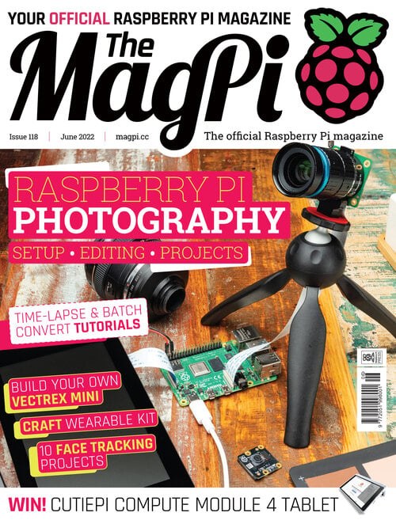
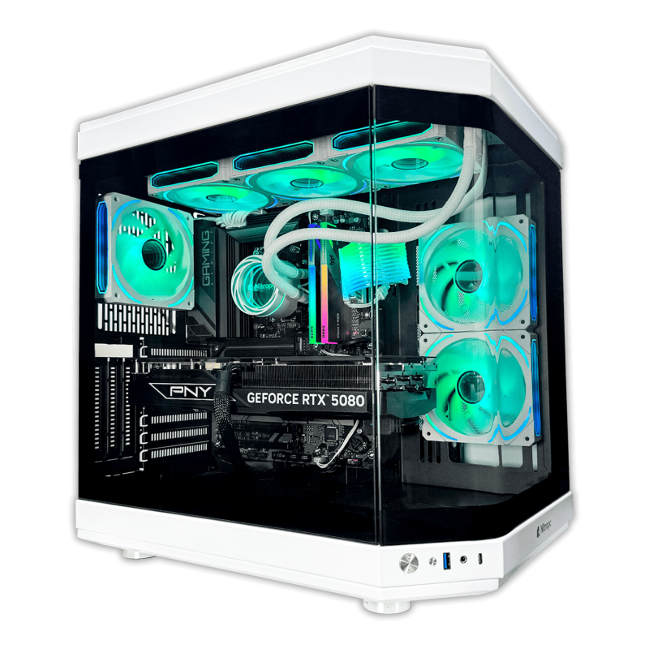
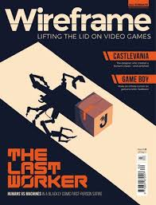

La fundación Raspberry Pi, creada en 2009 para la promoción de la informática en la enseñanza primaria y secundaria, comercializa desde febrero de 2012 la Raspberry Pi, una serie de ordenadores de placa reducida (SBC) de los que se han vendido casi 50 millones de unidades. La fundación también publica cinco revistas dedicadas a la informática, que se distribuyen en formato PDF de forma gratuita. Presentamos aquí tres de ellas.

The MagPi es la revista oficial de Raspberry Pi. Dirigida a la comunidad, ofrece todo tipo de proyectos relacionados con la Raspberry, tutoriales sobre informática y electrónica, guías y las últimas noticias y eventos de la comunidad. Se encuentra a caballo entre la programación y la electrónica. En cada número encontrarás tutoriales sobre temas como: automatización del hogar, robótica, inteligencia artificial, impresión 3D, juegos, etc.
The MagPi fue la primera revista publicada por la Raspberry Foundation. El primer número de The MagPi se publicó en MAYO DE 2012 y el último número publicado es el número 118, correspondiente a JUNIO DE 2022.
⮴
Nitropc es una referencia clave en el mercado español de PC Gaming, especializada en equipos de alto rendimiento, workstations y accesorios personalizados para entusiastas de la tecnología.
Cada equipo, como el Boost Nitro que ves en pantalla, es el resultado de un cuidado proceso de ensamblaje. Nitropc destaca por ofrecer configuraciones equilibradas que integran componentes de última generación —como procesadores AMD Ryzen de alto rendimiento y tarjetas gráficas NVIDIA GeForce RTX de la serie 50— diseñadas para usuarios que exigen máxima potencia, tanto para gaming avanzado como para trabajo creativo.
En su catálogo también encontrarás soluciones completas que incluyen no solo el equipo, sino también periféricos optimizados y opciones de financiación a medida, facilitando que cualquier usuario pueda acceder a un setup profesional listo para funcionar desde el primer momento.
Nitropc apuesta por la transparencia y la calidad en sus componentes, ofreciendo opciones de personalización para que cada jugador pueda ajustar la memoria, el almacenamiento o la estética de su equipo a sus necesidades específicas.
⮴
Wireframe es una revista mensual dedicada a videojuegos. Cada número está dedicado a ver cómo se hacen los juegos, quiénes los hacen e incluso te guiaremos a lo largo del proceso de que crees tus propios juegos.
El primer número de Wireframe se publicó en NOVIEMBRE DE 2018 y el último número publicado es el número 62, correspondiente a MAYO DE 2022.
⮴